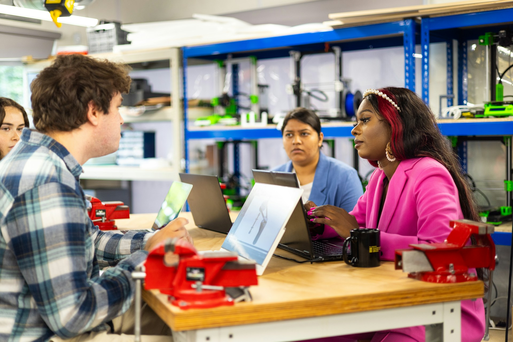
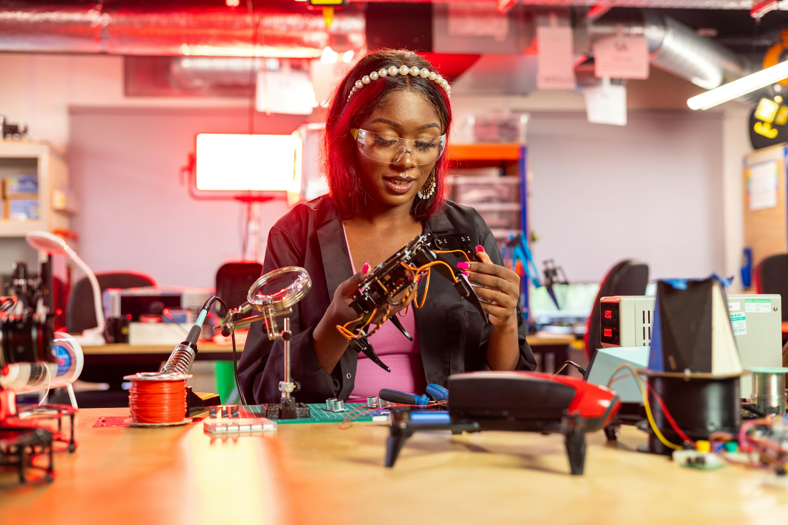

Community member
Attend events, meet people, use resources, join discussions, and stay connected to engineering opportunities.
- Low time commitment
- No experience required
- Best place to explore
Join as a member, builder, leader, mentor, organizer, or someone still exploring engineering. You do not need prior technical or leadership experience to begin.

Participation is designed to be flexible. Members can attend events without joining a project, build without holding office, or grow from a small task into serious leadership.
Attend events, meet people, use resources, join discussions, and stay connected to engineering opportunities.
Join a technical or nontechnical role on a team and contribute to a prototype, research process, test plan, or public demonstration.
Own scope, team rhythm, design reviews, documentation, and the path from idea to tested result.
Build the organization's systems, events, partnerships, communications, finances, competition, and continuity.
Share technical experience, career perspective, feedback, or a workshop with students.
Support projects, sponsor materials, bring a community problem, collaborate on events, or help evaluate a future engineering challenge concept.


Choose the positions, project interests, programs, and level of involvement that fit you now.
Open the form ↗Meet other students, hear the launch plan, explore projects, and help decide what the first semester should prioritize.
See upcoming events →Join a project, help at a table, organize a panel, own communications, research a resource, or contribute to the competition committee.
Browse current openings →The society should make it easier to meet people and easier to become the engineer, collaborator, and leader you are trying to become.
Students across interests and class years who can collaborate, study, share advice, and make introductions.
More informed questions about courses, partner schools, engineering fields, applications, and career direction.
Experience making decisions, integrating systems, testing claims, documenting results, and presenting in public.
Ownership of programs, budgets, teams, partnerships, communications, or organization systems that produced real outcomes.
The founding-member form lets you choose multiple interests. Submitting it does not lock you into a position.
No. The society is open to Oberlin students interested in engineering, design, technology, innovation, and building things. Some resources and programs specifically support the 3-2 pathway.
No. Projects and programs should include meaningful entry points for beginners while also creating room for students with advanced skills.
Yes. General membership, events, resources, study support, and community participation do not require a leadership role.
It depends on the role and project. Teams will define expectations before members commit, and strong projects should offer both core and supporting roles.
Yes. Engineering projects need communication, design, ethics, art, music, policy, economics, storytelling, research, and community understanding alongside technical work.